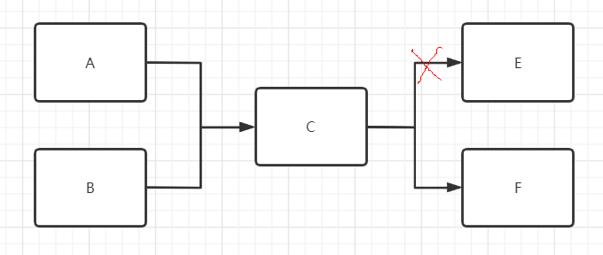
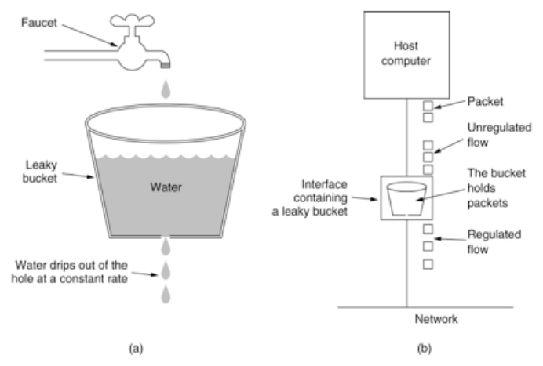
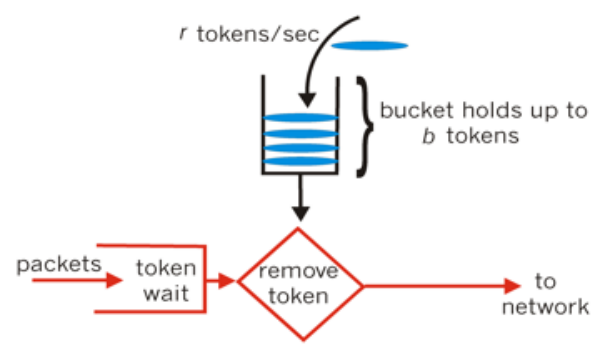
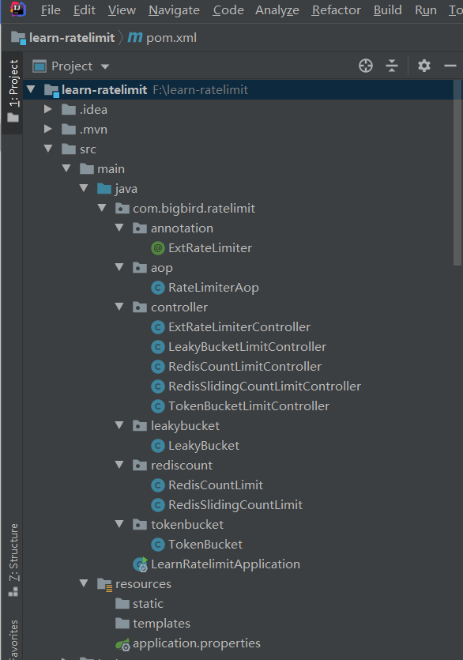

- AQS 万字图文全面解析.md.html
- Docker 镜像构建原理及源码分析.md.html
- ElasticSearch 小白从入门到精通.md.html
- JVM CPU Profiler技术原理及源码深度解析.md.html
- JVM 垃圾收集器.md.html
- JVM 面试的 30 个知识点.md.html
- Java IO 体系、线程模型大总结.md.html
- Java NIO浅析.md.html
- Java 面试题集锦（网络篇）.md.html
- Java-直接内存 DirectMemory 详解.md.html
- Java中9种常见的CMS GC问题分析与解决（上）.md.html
- Java中9种常见的CMS GC问题分析与解决（下）.md.html
- Java中的SPI.md.html
- Java中的ThreadLocal.md.html
- Java线程池实现原理及其在美团业务中的实践.md.html
- Java魔法类：Unsafe应用解析.md.html
- Kafka 源码阅读笔记.md.html
- Kafka、ActiveMQ、RabbitMQ、RocketMQ 区别以及高可用原理.md.html
- MySQL · 引擎特性 · InnoDB Buffer Pool.md.html
- MySQL · 引擎特性 · InnoDB IO子系统.md.html
- MySQL · 引擎特性 · InnoDB 事务系统.md.html
- MySQL · 引擎特性 · InnoDB 同步机制.md.html
- MySQL · 引擎特性 · InnoDB 数据页解析.md.html
- MySQL · 引擎特性 · InnoDB崩溃恢复.md.html
- MySQL · 引擎特性 · 临时表那些事儿.md.html
- MySQL 主从复制 半同步复制.md.html
- MySQL 主从复制 基于GTID复制.md.html
- MySQL 主从复制.md.html
- MySQL 事务日志(redo log和undo log).md.html
- MySQL 亿级别数据迁移实战代码分享.md.html
- MySQL 从一条数据说起-InnoDB行存储数据结构.md.html
- MySQL 地基基础：事务和锁的面纱.md.html
- MySQL 地基基础：数据字典.md.html
- MySQL 地基基础：数据库字符集.md.html
- MySQL 性能优化：碎片整理.md.html
- MySQL 故障诊断：一个 ALTER TALBE 执行了很久，你慌不慌？.md.html
- MySQL 故障诊断：如何在日志中轻松定位大事务.md.html
- MySQL 故障诊断：教你快速定位加锁的 SQL.md.html
- MySQL 日志详解.md.html
- MySQL 的半同步是什么？.md.html
- MySQL中的事务和MVCC.md.html
- MySQL事务_事务隔离级别详解.md.html
- MySQL优化：优化 select count().md.html
- MySQL共享锁、排他锁、悲观锁、乐观锁.md.html
- MySQL的MVCC（多版本并发控制）.md.html
- QingStor 对象存储架构设计及最佳实践.md.html
- RocketMQ 面试题集锦.md.html
- SnowFlake 雪花算法生成分布式 ID.md.html
- Spring Boot 2.x 结合 k8s 实现分布式微服务架构.md.html
- Spring Boot 教程：如何开发一个 starter.md.html
- Spring MVC 原理.md.html
- Spring MyBatis和Spring整合的奥秘.md.html
- Spring 帮助你更好的理解Spring循环依赖.md.html
- Spring 循环依赖及解决方式.md.html
- Spring中眼花缭乱的BeanDefinition.md.html
- Vert.x 基础入门.md.html
- eBay 的 Elasticsearch 性能调优实践.md.html
- 不可不说的Java“锁”事.md.html
- 互联网并发限流实战.md.html
- 从ReentrantLock的实现看AQS的原理及应用.md.html
- 从SpringCloud开始，聊微服务架构.md.html
- 全面了解 JDK 线程池实现原理.md.html
- 分布式一致性理论与算法.md.html
- 分布式一致性算法 Raft.md.html
- 分布式唯一 ID 解析.md.html
- 分布式链路追踪：集群管理设计.md.html
- 动态代理种类及原理，你知道多少？.md.html
- 响应式架构与 RxJava 在有赞零售的实践.md.html
- 大数据算法——布隆过滤器.md.html
- 如何优雅地记录操作日志？.md.html
- 如何设计一个亿级消息量的 IM 系统.md.html
- 异步网络模型.md.html
- 当我们在讨论CQRS时，我们在讨论些神马？.md.html
- 彻底理解 MySQL 的索引机制.md.html
- 最全的 116 道 Redis 面试题解答.md.html
- 有赞权限系统(SAM).md.html
- 有赞零售中台建设方法的探索与实践.md.html
- 服务注册与发现原理剖析（Eureka、Zookeeper、Nacos）.md.html
- 深入浅出Cache.md.html
- 深入理解 MySQL 底层实现.md.html
- 漫画讲解 git rebase VS git merge.md.html
- 生成浏览器唯一稳定 ID 的探索.md.html
- 缓存 如何保证缓存与数据库的双写一致性？.md.html
- 网易严选怎么做全链路监控的？.md.html
- 美团万亿级 KV 存储架构与实践.md.html
- 美团点评Kubernetes集群管理实践.md.html
- 美团百亿规模API网关服务Shepherd的设计与实现.md.html
- 解读《阿里巴巴 Java 开发手册》背后的思考.md.html
- 认识 MySQL 和 Redis 的数据一致性问题.md.html
- 进阶：Dockerfile 高阶使用指南及镜像优化.md.html
- 铁总在用的高性能分布式缓存计算框架 Geode.md.html
- 阿里云PolarDB及其共享存储PolarFS技术实现分析（上）.md.html
- 阿里云PolarDB及其共享存储PolarFS技术实现分析（下）.md.html
- 面试最常被问的 Java 后端题.md.html
- 领域驱动设计在互联网业务开发中的实践.md.html
- 领域驱动设计的菱形对称架构.md.html
- 高效构建 Docker 镜像的最佳实践.md.html
- 捐赠
互联网并发限流实战
本文主要介绍互联网限流相关的概念与算法，并且附以 Java 代码实现。包括计数器法、滑动窗口计数法、漏斗桶算法、令牌桶算法。文末实现一个自定义限流注解以及 AOP 限流拦截框架。
限流相关的基本概念
在介绍限流之前先介绍几个容易混淆的概念。包括服务熔断、服务降级、服务隔离。
服务熔断
理解熔断之前先了解另一个概念：微服务的雪崩效应。因为熔断机制通常是作为应对雪崩效应的一种微服务链路保护机制。
在微服务架构中，一个微服务通常是完成一个单一业务功能的独立应用。这样做的好处是各个业务功能之间最大可能地解耦，每个微服务可以独立演进。通常一个应用可能会有很多个微服务组成，服务间通过 RPC 相互调用。假设有如下服务调用链路：

A、B 依赖 C 去调用 E、F。如果 E 服务不能正常提供服务了，C 的超时重试机制将会执行。同时新的调用不断产生，会导致 C 对 E 服务的调用大量的积压，产生大量的调用等待和重试调用，慢慢会耗尽 C 的资源，比如内存或 CPU，同时影响 C 调 F，最终整个应用不可用。本例中由于链路上 E 的故障，对微服务 A、B 的调用就会占用越来越多的系统资源，进而引起系统崩溃，即所谓的“雪崩效应”。
熔断机制是应对雪崩效应的一种微服务链路保护机制。生活中有很多熔断的例子，比如电路中某个地方的电压过高，熔断器就会熔断，对电路进行过载保护。股市里面，如果股票指数涨跌幅过高，触及设置的熔断点时，随后的一段时间内将暂停交易。微服务架构中的熔断机制作用类似。当调用链路的某个微服务不可用、或者响应时间太长、或者错误次数达到某个阈值，会进行服务熔断，即快速返回响应信息。当检测到该节点微服务调用响应正常后，逐步恢复正常的调用链路。
服务降级
服务降级主要是指在服务器压力陡增的情况下，根据某种策略对一些非核心服务或者页面不做请求处理或简单处理，从而释放服务器资源以保证核心业务正常运作或高效运作。比如每年的双十一活动时，电商网站把无关交易的服务降级，比如查看历史订单、商品历史评论等业务，只显示最近 100 条等等。
服务隔离
隔离是指将服务或者资源隔离开。服务隔离能够在服务发生故障时限定其影响范围，保证其它服务还是可用的。资源隔离一般是指通过隔离来减少服务间资源竞争。资源隔离的粒度有很多种，比如线程隔离、进程隔离、机房隔离等。线程隔离即隔离线程池资源，不同服务的执行使用不同的线程池。这样做的好处是即使其中一个服务线程池满了，也不会影响到其他的服务。比如下图中 Tomcat 处理请求，对每个微服务，都分配一个线程池。
服务限流
进入正题，本篇主要阐述的是服务限流。服务限流是限制请求的数量，即某个时间窗口内的请求速率。一旦达到限制速率则可以拒绝服务（定向到错误页或告知系统忙）、排队等待（比如秒杀、用户评论、下单）、降级（返回兜底数据或默认数据）。
各个概念比较
服务熔断、服务降级都是从系统的可用性角度考虑，防止系统响应延迟甚至崩溃而采用的技术性的系统保护手段。服务熔断一般是由某个下游服务故障引起，而服务降级一般是从整体业务的负载情况考虑。限流则是对单位时间内请求次数的限制。三者都是通过某种手段保证流量过载时系统的可用性。服务隔离则是让不同的业务使用各自独立的线资源池，避免服务之间资源竞争的影响。
常见的限流手段
常见的限流手段有如下这些。限制总的请求并发数（比如数据库连接池、线程池）、限制瞬时并发数（如 nginx 的 limit_conn 模块，用来限制瞬时并发连接数）、限制某个时间窗口内的平均速率（RateLimiter、nginx 的 limit_req 模块）；此外还有如限制 RPC 调用频率、限制 MQ 的消费速率等。
常用的限流算法
简单计数
计数器算法是使用计数器在周期内累加访问次数，当达到设定的阈值时，触发限流策略。下一个周期开始时，进行清零，重新计数。比如 1 分钟内限制请求总数为 100。如果超过 100 则返回失败。
滑动窗口计数
简单计数然简单，但是有一个致命的问题，即临界问题。比如 1 分钟内限制请求总数为 100 的场景下，前一个一分钟内直到这一分钟快结束的时候才来了 100 个请求，而后一个一分钟刚开始就立即来了 100 个请求。虽然是在两个不同的一分钟区间，但是事实上不到一分钟的时间内，来了 200 个请求，因此计数器限流失效。
滑动窗口算法是将时间周期进一步划分为 N 个小周期，分别记录每个小周期内访问次数，并且根据时间滑动删除过期的小周期。 如下图，假设时间周期为 1min，将 1min 再分为 6 个小周期，统计每个小周期的访问数量。如果第 6 个小周期内，访问数量为 100，到了第 7 个小周期内，访问数量也为 100，那么 即触发滑动窗口(红色虚线框出)内的访问次数限制。由此可见，滑动窗口的单位区间划分越多，滑动窗口的滚动就越平滑，限流统计就会越精确。
漏斗桶
漏斗桶算法顾名思义，算法内部有一个容器，类似生活中的漏斗。当请求进来时，相当于水倒入漏斗，然后从下方出水口匀速流出。不管进水速率如何增减，出水速率始终保持一致，直到漏桶为空。由于进水速度未知，突发流量来不及处理就会在桶中累积。如果突破了桶容量就会溢出，即丢弃请求。漏斗桶的示意图如下：

令牌桶
令牌桶算法某种程度上是对漏斗桶算法的改进。令牌桶能够在限制请求平均速率的同时还允许一定程度的突发调用。在令牌桶算法中，存在一个桶，用来存放固定数量的令牌。该算法以一定的速率往桶中放入令牌。每次请求需要先获取到桶中的令牌才能继续执行，否则等待可用的令牌，或者直接拒绝。
放令牌的动作是持续不断进行的，如果桶中令牌数达到上限，则丢弃令牌，因此桶中可能一直持有大量的可用令牌。此时请求进来可以直接拿到令牌执行。比如设置 qps 为 100，那么限流器初始化完成 1 秒后，桶中就已经有 100 个令牌了，如果此前还没有请求过来，这时突然来了 100 个请求，该限流器可以抵挡瞬时的 100 个请求。由此可见，只有桶中没有令牌时，请求才会进行等待，最终表现的效果即为以一定的速率执行。令牌桶的示意图如下：

除了在应用层限流外也可以在网络层限流，比如通过 nginx 的限流模块设置单个客户端 IP 的访问限制等，不在本文讨论范围内。
常用的限流算法 Java 实现
工程概览

基于 Redis 的简单计数法
新建 Spring Boot 工程并引入依赖
<properties>
<java.version>1.8</java.version>
<spring.version>2.3.1.RELEASE</spring.version>
</properties>
<dependencies>
<dependency>
<groupId>org.springframework.boot</groupId>
<artifactId>spring-boot-starter-web</artifactId>
</dependency>
<dependency>
<groupId>org.springframework.data</groupId>
<artifactId>spring-data-redis</artifactId>
<version>${spring.version}</version>
</dependency>
<dependency>
<groupId>org.apache.commons</groupId>
<artifactId>commons-pool2</artifactId>
<version>2.8.0</version>
</dependency>
<dependency>
<groupId>io.lettuce</groupId>
<artifactId>lettuce-core</artifactId>
<version>5.3.2.RELEASE</version>
</dependency>
</dependencies>
配置 application.properties
server.port=8888
# Redis 数据库索引（默认为 0）
spring.redis.database=0
# Redis 服务器地址
spring.redis.host=127.0.0.1
# Redis 服务器连接端口
spring.redis.port=6379
# Redis 服务器连接密码（默认为空）
spring.redis.password=
# 连接池最大连接数（使用负值表示没有限制）
spring.redis.jedis.pool.max-active=20
# 连接池最大阻塞等待时间（使用负值表示没有限制）
spring.redis.jedis.pool.max-wait=1000
# 连接池中的最大空闲连接
spring.redis.jedis.pool.max-idle=10
# 连接池中的最小空闲连接
spring.redis.jedis.pool.min-idle=0
# 连接超时时间（毫秒）
spring.redis.timeout=2000
编写 RedisCountLimit
基于 redis 的 incr 机制
import org.springframework.beans.factory.annotation.Autowired;
import org.springframework.data.redis.core.StringRedisTemplate;
import org.springframework.stereotype.Component;
import java.time.LocalTime;
import java.util.concurrent.TimeUnit;
/
* 计数法限流
*/
@Component
public class RedisCountLimit {
public static final String KEY = "ratelimit_";
public static final int LIMIT = 10;
@Autowired
StringRedisTemplate redisTemplate;
public boolean triggerLimit(String reqPath) {
String redisKey = KEY + reqPath;
Long count = redisTemplate.opsForValue().increment(redisKey, 1);
System.out.println(LocalTime.now() + " " + reqPath + " " + count);
if (count != null && count == 1) {
redisTemplate.expire(redisKey, 60, TimeUnit.SECONDS);
}
//防止出现并发操作未设置超时时间的场景,这样 key 就是永不过期,存在风险
if (redisTemplate.getExpire(redisKey, TimeUnit.SECONDS) == -1) {
redisTemplate.expire(redisKey, 60, TimeUnit.SECONDS);
}
if (count > LIMIT) {
System.out.println(LocalTime.now() + " " + reqPath + " count is:" + count + ",触发限流");
return true;
}
return false;
}
}
Controller 层集成
import com.bigbird.ratelimit.rediscount.RedisCountLimit;
import org.springframework.beans.factory.annotation.Autowired;
import org.springframework.web.bind.annotation.RequestMapping;
import org.springframework.web.bind.annotation.RestController;
import javax.servlet.http.HttpServletRequest;
import java.time.LocalDateTime;
/
* 基于 redis 的计数器限流 demo
*/
@RestController
public class RedisCountLimitController {
@Autowired
RedisCountLimit redisCountLimit;
@RequestMapping("/rediscount")
public String redisCount(HttpServletRequest request) {
String servletPath = request.getServletPath();
boolean triggerLimit = redisCountLimit.triggerLimit(servletPath);
if (triggerLimit) {
return LocalDateTime.now() + " " + servletPath + " 系统忙，稍后再试";
} else {
return LocalDateTime.now() + " " + servletPath + "请求成功";
}
}
@RequestMapping("/rediscount2")
public String redisCount2(HttpServletRequest request) {
String servletPath = request.getServletPath();
boolean triggerLimit = redisCountLimit.triggerLimit(servletPath);
if (triggerLimit) {
return LocalDateTime.now() + " " + servletPath + " 系统忙，稍后再试";
} else {
return LocalDateTime.now() + " " + servletPath + "请求成功";
}
}
}
运行测试
启动 Spring Boot 工程，确保 Redis 已运行，浏览器访问，f5 多刷新几次：
基于 Redis 的滑动窗口计数法
编写 RedisSlidingCountLimit
通过 Redis 的 zset 数据结构：
import org.springframework.beans.factory.annotation.Autowired;
import org.springframework.data.redis.core.StringRedisTemplate;
import org.springframework.stereotype.Component;
import java.time.LocalTime;
import java.util.UUID;
/
* 滑动窗口计数法限流
*/
@Component
public class RedisSlidingCountLimit {
public static final String KEY = "slidelimit_";
public static final int LIMIT = 10;
//限流时间间隔(秒)
public static final int PERIOD = 60;
@Autowired
StringRedisTemplate redisTemplate;
public boolean triggerLimit(String reqPath) {
String redisKey = KEY + reqPath;
if (redisTemplate.hasKey(redisKey)) {
Integer count = redisTemplate.opsForZSet().rangeByScore(redisKey, System.currentTimeMillis() - PERIOD * 1000, System.currentTimeMillis()).size();
System.out.println(count);
if (count != null && count > LIMIT) {
System.out.println(LocalTime.now() + " " + reqPath + " count is:" + count + ",触发限流");
return true;
}
}
long currentTime = System.currentTimeMillis();
redisTemplate.opsForZSet().add(redisKey, UUID.randomUUID().toString(), currentTime);
// 清除旧的访问数据,比如 period=60s 时,标识清除 60s 以前的记录
redisTemplate.opsForZSet().removeRangeByScore(redisKey, 0, System.currentTimeMillis() - PERIOD * 1000);
return false;
}
}
Controller 层集成
import com.bigbird.ratelimit.rediscount.RedisSlidingCountLimit;
import org.springframework.beans.factory.annotation.Autowired;
import org.springframework.web.bind.annotation.RequestMapping;
import org.springframework.web.bind.annotation.RestController;
import javax.servlet.http.HttpServletRequest;
import java.time.LocalDateTime;
/
* 基于 Redis 的滑动窗口计数器限流 demo
*/
@RestController
public class RedisSlidingCountLimitController {
@Autowired
RedisSlidingCountLimit redisSlidingCountLimit;
@RequestMapping("/slidecount")
public String redisCount(HttpServletRequest request) {
String servletPath = request.getServletPath();
boolean triggerLimit = redisSlidingCountLimit.triggerLimit(servletPath);
if (triggerLimit) {
return LocalDateTime.now() + " " + servletPath + " 系统忙，稍后再试";
} else {
return LocalDateTime.now() + " " + servletPath + "请求成功";
}
}
@RequestMapping("/slidecount2")
public String redisCount2(HttpServletRequest request) {
String servletPath = request.getServletPath();
boolean triggerLimit = redisSlidingCountLimit.triggerLimit(servletPath);
if (triggerLimit) {
return LocalDateTime.now() + " " + servletPath + " 系统忙，稍后再试";
} else {
return LocalDateTime.now() + " " + servletPath + "请求成功";
}
}
}
运行测试
启动 Spring Boot 工程，确保 Redis 已运行，访问：
漏斗桶算法实现
编写 LeakyBucket
import java.time.LocalTime;
/
* 漏斗桶算法限流
*/
public class LeakyBucket {
/
* 每秒处理数量(出水速率)
*/
private int rate;
/
* 桶容量
*/
private int capacity;
/
* 当前水量
*/
private int water;
/
* 最后刷新时间
*/
private long refreshTime;
public LeakyBucket(int rate, int capacity) {
this.capacity = capacity;
this.rate = rate;
}
private void refreshWater() {
long now = System.currentTimeMillis();
water = (int) Math.max(0, water - (now - refreshTime) / 1000 * rate);
refreshTime = now;
}
public synchronized boolean triggerLimit(String reqPath) {
refreshWater();
if (water < capacity) {
water++;
System.out.println(LocalTime.now() + " " + reqPath + " current capacity is:" + (capacity - water) + ",water is:" + water + ",请求成功");
return false;
} else {
System.out.println(LocalTime.now() + " " + reqPath + " current capacity is:" + (capacity - water) + ",water is:" + water + ",触发限流");
return true;
}
}
}
Controller 层集成
import com.bigbird.ratelimit.leakybucket.LeakyBucket;
import org.springframework.web.bind.annotation.RequestMapping;
import org.springframework.web.bind.annotation.RestController;
import javax.servlet.http.HttpServletRequest;
import java.time.LocalDateTime;
/
* 漏斗桶算法限流 demo
*/
@RestController
public class LeakyBucketLimitController {
LeakyBucket bucket1 = new LeakyBucket(2, 10);
LeakyBucket bucket2 = new LeakyBucket(2, 20);
@RequestMapping("/leakyBucket1")
public String leakyBucket1(HttpServletRequest request) {
String servletPath = request.getServletPath();
boolean triggerLimit = bucket1.triggerLimit(servletPath);
if (triggerLimit) {
return LocalDateTime.now() + " " + servletPath + " 系统忙，稍后再试";
} else {
return LocalDateTime.now() + " " + servletPath + "请求成功";
}
}
@RequestMapping("/leakyBucket2")
public String leakyBucket2(HttpServletRequest request) {
String servletPath = request.getServletPath();
boolean triggerLimit = bucket2.triggerLimit(servletPath);
if (triggerLimit) {
return LocalDateTime.now() + " " + servletPath + " 系统忙，稍后再试";
} else {
return LocalDateTime.now() + " " + servletPath + "请求成功";
}
}
}
运行测试
启动 Spring Boot 工程，浏览器访问下列地址，连续 f5 多刷新测试
令牌桶算法实现
基于 Guava RateLimiter 实现。
引入依赖
<dependency>
<groupId>com.google.guava</groupId>
<artifactId>guava</artifactId>
<version>29.0-jre</version>
</dependency>
编写 TokenBucket
import com.google.common.util.concurrent.RateLimiter;
import java.time.LocalTime;
import java.util.concurrent.TimeUnit;
/
* 令牌桶算法限流
*/
public class TokenBucket {
/
* qps,即每秒处理数量
*/
private int rate;
private RateLimiter rateLimiter;
public TokenBucket(int rate) {
this.rate = rate;
this.rateLimiter = RateLimiter.create(rate);
}
public boolean triggerLimit(String reqPath) {
boolean acquireRes = rateLimiter.tryAcquire(500, TimeUnit.MILLISECONDS);
if (acquireRes) {
System.out.println(LocalTime.now() + " " + reqPath + ",请求成功");
return false;
} else {
System.out.println(LocalTime.now() + " " + reqPath + ",触发限流");
return true;
}
}
}
Controller 层集成
import com.bigbird.ratelimit.tokenbucket.TokenBucket;
import org.springframework.web.bind.annotation.RequestMapping;
import org.springframework.web.bind.annotation.RestController;
import javax.servlet.http.HttpServletRequest;
import java.time.LocalDateTime;
/
* 令牌桶限流算法 demo
*/
@RestController
public class TokenBucketLimitController {
/
* 每秒钟限速 1
*/
TokenBucket bucket1 = new TokenBucket(1);
/
* 每秒钟限速 2
*/
TokenBucket bucket2 = new TokenBucket(2);
@RequestMapping("/tokenBucket1")
public String leakyBucket1(HttpServletRequest request) {
String servletPath = request.getServletPath();
boolean triggerLimit = bucket1.triggerLimit(servletPath);
if (triggerLimit) {
return LocalDateTime.now() + " " + servletPath + " 系统忙，稍后再试";
} else {
return LocalDateTime.now() + " " + servletPath + "请求成功";
}
}
@RequestMapping("/tokenBucket2")
public String leakyBucket2(HttpServletRequest request) {
String servletPath = request.getServletPath();
boolean triggerLimit = bucket2.triggerLimit(servletPath);
if (triggerLimit) {
return LocalDateTime.now() + " " + servletPath + " 系统忙，稍后再试";
} else {
return LocalDateTime.now() + " " + servletPath + "请求成功";
}
}
}
运行测试
启动 Spring Boot 工程，浏览器访问下列地址，连续 f5 多刷新测试：
自定义注解、AOP 封装限流
上述实现方式简单粗暴，实际应用中可以封装自定义注解，并通过 AOP 实现 controller 层接口自动限流拦截。废话不多说，上代码。下面的案例基于 RateLimiter 令牌桶。其它算法读者可以参考此例自行封装。
引入依赖
<dependency>
<groupId>org.springframework.boot</groupId>
<artifactId>spring-boot-starter-aop</artifactId>
</dependency>
编写自定义注解
import java.lang.annotation.ElementType;
import java.lang.annotation.Retention;
import java.lang.annotation.RetentionPolicy;
import java.lang.annotation.Target;
@Target(value = ElementType.METHOD)
@Retention(RetentionPolicy.RUNTIME)
public @interface ExtRateLimiter {
double permitsPerSecond();
long timeout();
}
编写 AOP 切面
import com.bigbird.ratelimit.annotation.ExtRateLimiter;
import com.google.common.util.concurrent.RateLimiter;
import org.aspectj.lang.ProceedingJoinPoint;
import org.aspectj.lang.annotation.Around;
import org.aspectj.lang.annotation.Aspect;
import org.aspectj.lang.annotation.Pointcut;
import org.aspectj.lang.reflect.MethodSignature;
import org.springframework.stereotype.Component;
import org.springframework.web.context.request.RequestContextHolder;
import org.springframework.web.context.request.ServletRequestAttributes;
import javax.servlet.http.HttpServletResponse;
import java.io.IOException;
import java.io.PrintWriter;
import java.lang.reflect.Method;
import java.time.LocalTime;
import java.util.concurrent.ConcurrentHashMap;
import java.util.concurrent.TimeUnit;
/
* 封装基于 RateLimiter 的限流注解
*/
@Component
@Aspect
public class RateLimiterAop {
/
* 保存接口路径和限流器的对应关系
*/
private ConcurrentHashMap<String, RateLimiter> rateLimiters = new ConcurrentHashMap();
@Pointcut("execution(public * com.bigbird.ratelimit.controller.*.*(..))")
public void rateLimiterAop() {
}
/
* 使用环绕通知拦截所有 Controller 请求
*
* @param proceedingJoinPoint
* @return
*/
@Around("rateLimiterAop()")
public Object doBefore(ProceedingJoinPoint proceedingJoinPoint) throws Throwable {
MethodSignature signature = (MethodSignature) proceedingJoinPoint.getSignature();
Method method = signature.getMethod();
if (method == null) {
return null;
}
ExtRateLimiter extRateLimiter = method.getDeclaredAnnotation(ExtRateLimiter.class);
if (extRateLimiter == null) {
return proceedingJoinPoint.proceed();
}
double permitsPerSecond = extRateLimiter.permitsPerSecond();
long timeout = extRateLimiter.timeout();
ServletRequestAttributes requestAttributes = (ServletRequestAttributes) RequestContextHolder.getRequestAttributes();
String requestURI = requestAttributes.getRequest().getRequestURI();
RateLimiter rateLimiter = rateLimiters.get(requestURI);
if (rateLimiter == null) {
rateLimiter = RateLimiter.create(permitsPerSecond);
RateLimiter rateLimiterPrevious = rateLimiters.putIfAbsent(requestURI, rateLimiter);
if (rateLimiterPrevious != null) {
rateLimiter = rateLimiterPrevious;
}
}
boolean tryAcquire = rateLimiter.tryAcquire(timeout, TimeUnit.MILLISECONDS);
if (!tryAcquire) {
System.out.println(LocalTime.now() + " " + requestURI + " 触发限流");
doFallback();
return null;
}
System.out.println(LocalTime.now() + " " + requestURI + " 请求成功");
return proceedingJoinPoint.proceed();
}
private void doFallback() {
ServletRequestAttributes requestAttributes = (ServletRequestAttributes) RequestContextHolder.getRequestAttributes();
HttpServletResponse response = requestAttributes.getResponse();
response.setContentType("text/html;charset=UTF-8");
PrintWriter writer = null;
try {
writer = response.getWriter();
writer.println("系统忙，请稍后再试！");
} catch (IOException e) {
e.printStackTrace();
} finally {
writer.close();
}
}
}
Controller 层集成
对要限流的接口加 ExtRateLimiter 注解设置：
import com.bigbird.ratelimit.annotation.ExtRateLimiter;
import org.springframework.web.bind.annotation.RequestMapping;
import org.springframework.web.bind.annotation.RestController;
import javax.servlet.http.HttpServletRequest;
import java.time.LocalTime;
/
* 自定义注解标识接口进行限流
*/
@RestController
public class ExtRateLimiterController {
@RequestMapping("/extRate1")
@ExtRateLimiter(permitsPerSecond = 0.5, timeout = 500)
public String extRate1(HttpServletRequest request) {
return LocalTime.now() + " " + request.getRequestURI() + "请求成功";
}
@RequestMapping("/extRate2")
@ExtRateLimiter(permitsPerSecond = 2, timeout = 500)
public String extRate2(HttpServletRequest request) {
return LocalTime.now() + " " + request.getRequestURI() + "请求成功";
}
}
运行测试
启动 Spring Boot 工程，浏览器访问下列地址，连续 f5 多刷新测试：
小结
本文通俗易懂地介绍了互联网限流相关的概念与算法，并且附以 Java 代码实现。包括计数器法、滑动窗口计数法、漏斗桶算法、令牌桶算法。最后封装了一个自定义限流注解以及 AOP 拦截接口限流。读者通过对本文的学习可以快速上手限流算法实现，应用到实际工作中。
代码下载地址：
© 2019 - 2023 Liangliang Lee. Powered by gin and hexo-theme-book.